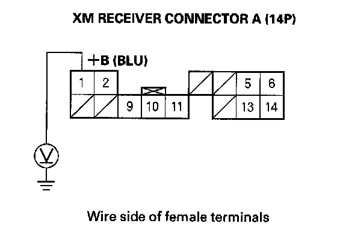
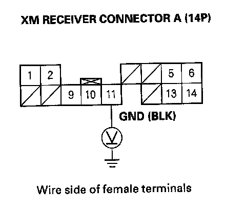
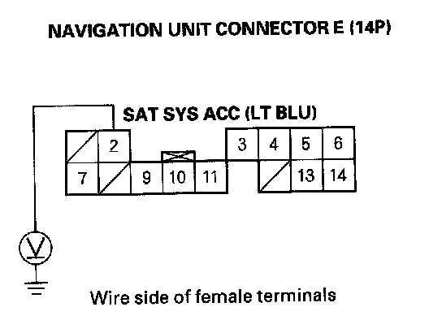
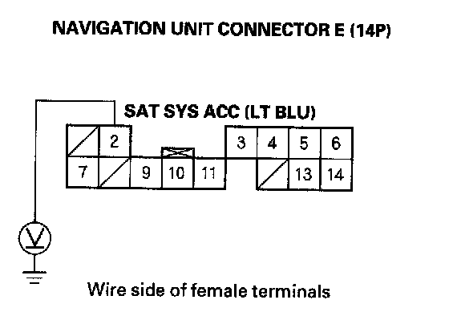
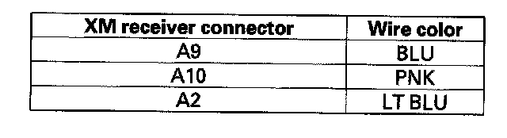
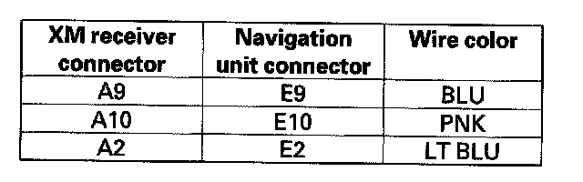

XM Radio Display Is Blank and No Station Information Is Displayed (With Navigation)
XM radio display is blank and no station information is displayed (with navigation)NOTE: If you can only tune to channels 000, 001,174, and 247, make sure the audio unit is set to the channel mode (see owner's manual), if it is set to channel mode, call XM satellite radio customer support and check the account activation status.
1. Turn the ignition switch to ACC (I).

2. Measure the voltage between XM receiver connector A (14P) NO.1 terminal and body ground.
Is there battery voltage?
YES - Go to step 3.
NO - Repair open in the wire between No. 23 (10 A) fuse in the under-hood fuse/relay box and XM receiver connector A (14P) NO.1 terminal.

3. Measure the voltage between XM receiver connector A (14P) No. 11 terminal and body ground.
Is there less than 0.1 V?
YES - Go to step 4.
NO - Repair open in the wire between the XM receiver connector A (14P) No.1 terminal and navigation unit connector E (14P) No. 11 terminal.
4. Turn the ignition switch to LOCK (0).

5. Measure the voltage between navigation unit connector E (14P) No.2 terminal and body ground.
Is there 10 V or more present?
YES - Go to step 6.
NO - Substitute a known-good XM receiver and recheck. If 10 V or more are present, replace the original XM receiver.
6. Turn the ignition switch ON (II).

7. Measure voltage between the navigation unit connector E (14P) No.2 terminal and body ground.
Is there less than 0.5 V?
YES - Go to step 8.
NO - Substitute a known-good navigation unit and recheck. If 0.5 V or less are present, replace the original navigation unit.
8. Turn the ignition switch to LOCK (0).
9. Disconnect navigation unit connector E (14P) and XM receiver connector A (14P).

10. Check for continuity between XM receiver connector A (14P) and body ground according to the table. Then check for continuity between the same terminals listed in the table and navigation unit connector E (14P) No.3 terminal (the harness shield).
Is there continuity?
YES - Repair a short in the wire between the navigation unit and the XM receiver, or replace the appropriate shielded harness.
NO - Go to step 11.

11. Check for continuity between XM receiver connector A (14P) and navigation unit connector E (14P) according to the table.
Is there continuity?
YES - Substitute a known-good XM receiver, then reconnect all connector and recheck. If the symptom/indication goes away, replace the original XM receiver. If symptom/indication is still present, replace the navigation unit.
NO - Repair open in the wire between navigation unit and XM receiver.